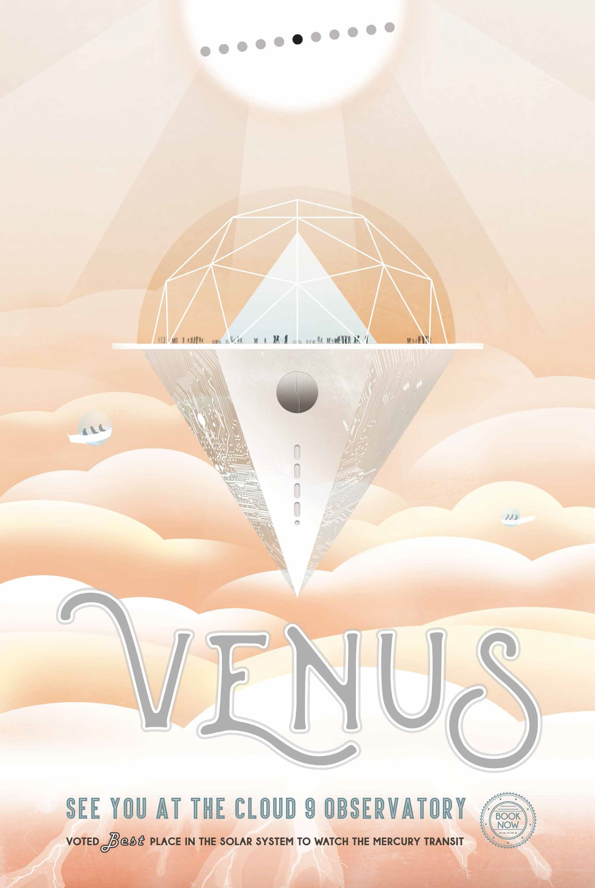

The rare science opportunity of planetary transits has long inspired bold voyages to exotic vantage points – journeys such as James Cook's trek to the South Pacific to watch Venus and Mercury cross the face of the Sun in 1769. Spacecraft now allow us the luxury to study these cosmic crossings at times of our choosing from unique locales across our solar system.